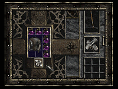

|
|
 The Horadric Cube is a quest item obtained in Act II which can be used to complete
several quests. In addition to that task, it can be also used as a permanent backpack to
store additional items and create new ones.
The Horadric Cube is a quest item obtained in Act II which can be used to complete
several quests. In addition to that task, it can be also used as a permanent backpack to
store additional items and create new ones.
|
Place the Horadric Cube in your inventory. Notice it only takes up 2x2 slots.
Place items into the Horadric Cube by picking them up, dragging them over the Horadric Cube, and left click
on the Horadric Cube. You will hear a sound when the item is placed into the Cube. You can also pick the Horadric Cube, drag
it over a large item you want to pick up, and left click on that item to place it into the Cube. You can also open up
the Cube by right clicking on it like a Tome. Drag items from your inventory into the Cube.
|
 |
|
[ Click to Enlarge - 116 KB ]
|
Items will be Identified by Cain while inside the Horadric Cube.
You cannot place a Horadric Cube within a Horadric Cube, imagine that...
Store resistance Jewelry in your Cube. When facing a problem Lightning, Cold, Fire or Poison monster,
open the Cube and get out your resistance jewelry.
Transmuting Items
You can use the Horadric Cube's magical powers to Transmute items into a new item.
Place the items into the Cube and hit the Transmute Button.
The Horadric Cube can be used to create Crafted Items.
Transmuting Formulae
Listed below are the current recipes for the Horadric Cube.
Simply place the items in the first half of the equation into the Cube and hit the Transmute
Button to produce the item in the second half of the equation.
 |
3 Runes of the Same Type (Runes 1-9) = 1 Higher Level Rune
3 El Runes -> 1 Eld Rune
3 Eld Runes -> 1 Tir Rune
3 Tir Runes -> 1 Nef Rune
3 Nef Runes -> 1 Eth Rune
3 Eth Runes -> 1 Ith Rune
3 Ith Runes -> 1 Tal Rune
3 Tal Runes -> 1 Ral Rune
3 Ral Runes -> 1 Ort Rune
3 Ort Runes -> 1 Thul Rune
This only works for Runes El-Ort and not on any higher Runes.
|
|
3 Perfect Skulls + 1 Rare Item + Stone of Jordan = Add 1 Socket To a Rare Item
Rare Items can only have one socket. You cannot add sockets to items that
don't normally have sockets. You can not use this on a Rare with one socket. You can only add one socket
to a zero socket Rare Item.
|
|
1 Perfect Skull + 1 Rare Item + Stone of Jordan = 1 High Quality New Rare Item of the same type
This formula has the possibility of creating a higher quality Rare Item than the following formula.
ilvl = int(.66 * clvl) + int(.66 * ilvl)
That is, the ilvl will be equal to .66 times your clvl (rounded down) plus .66 times the input item's ilvl (also rounded down).
|
|
6 Perfect Skulls + 1 Rare Item = 1 Random Low Quality Rare Item of the same type
You can use this formula to get another chance at a Rare Item of the same type.
ilvl = int(.4 * clvl) + int(.4 * ilvl)
Player level matters. This formula will not work on items
larger than 3x2.
|
|
4 Health Potions (of any type) + Ruby (any type) + Magical Sword = A Magic Sword of the Leech
You can use this formula to get a Life Stealing sword. ilvl = 30. The sword will always have the "of the Leech"
suffix (4-5% Life Stolen Per Hit) and has a chance at getting a prefix as well. The type of sword is retained.
For example, a champion sword as input will give a champion sword as output.
|
|
3 Magic Rings = 1 Random Magic Amulet
Save any unwanted rings for the chance of getting a high quality amulet.
ilvl = int(.75 * clvl). This means at Character Level 65, ilvl = 48.
So any Magical Prefix or Suffix with a level of 48 and below might be available.
Since +2 to Skills amulets have a level of 90, it's not possible to create a +2 to skills Amulet with this formula.
|
|
3 Magic Amulets = 1 Random Magic Ring
Save any unwanted amulets for the chance of getting a high quality ring.
ilvl = int(.75 * clvl). This means at Character Level 65, ilvl = 48.
So any Magical Prefix or Suffix with a level of 48 and below might be available.
|
|
3 Small Rejuvenation Potions = 1 Full Rejuvenation Potion
|
|
3 Gems of the Same Type and Grade (lower than Perfect) = 1 Higher Grade Gem of the Same Type
Use this formula to upgrade your growing masses of low quality Gems into something more useful.
|
|
2 Quivers of Bolts = 1 Quiver of Arrows
For users of Bows that are in need of ammunition. Random quantity of Arrows produced.
|
|
2 Quivers of Arrows = 1 Quiver of Bolts
For users of Crossbows that are in need of ammunition. Random quantity of Bolts produced.
|
|
1 Spear + 1 Quiver of Arrows = 1 Stack of Javelins
Mainly for Amazons that are in need of Javelins to use with skills. Any class/type of Spear can be used.
|
|
1 Axe + 1 Dagger = Throwing Axe
Any class/type of Axe can be used (i.e. magic/socketed/non magical axe/etc). Random quantity of throwing axes produced.
|
|
3 Perfect Gems (of any type) + 1 Magic Item = 1 New Random Magic Item of the Same Type
You can use this formula to get another chance at a Magic Item of the same type.
The ilvl = ilvl. This means to use 100% of the ilvl of the input item.
It's important to note the difference between "the ilvl is set to a fixed number" like what
happens in some recipes and "the ilvl of the output is exactly the same as the ilvl of the input" as is the case here.
So if you're cubing for +skills Grand Charms, for example,
you want to use Charms starting from late Nightmare, not ones that dropped in the Normal Blood Moor. You can use
this formula (with an Amulet) to create a +2 Skills Amulet.
And you cannot Gamble one before Character Level 84. Be warned however, that the chances of getting that on an Amulet might be very low
(considering everything is available) and it might take a lot of tries. Rare Items cannot be used with this formula to create new
Rare Items. You can also use this on Charms and Jewels.
|
|
Strangling Gas Potion + any type of Healing Potion = 1 Antidote Potion
|
|
6 Perfect Gems (1 of each type) + 1 Amulet (Magic) = Prismatic Amulet
Use this formula to create an Amulet with Resistance to all. ilvl = 50. The amulet will always have the
Prismatic prefix (All Resistances +16-20) and has a chance at getting a suffix as well.
|
|
1 Magic Ring + 1 Perfect Emerald + 1 Antidote Potion = 1 Jade Ring
Use this formula to create a Poison Resistance Ring. The Jade Ring
has a random percentage (21-30%) of Poison Resistance. You may also receive an additional Magic Suffix.
ilvl=30.
|
|
1 Magic Ring + 1 Perfect Ruby + 1 Exploding Potion = 1 Garnet Ring
Use this formula to create a Fire Resistance Ring. The Garnet Ring has a random percentage (21-30%) of
Fire Resistance. You may also receive an additional Magic Suffix.
ilvl=30.
|
|
1 Magic Ring + 1 Perfect Topaz + 1 Rejuvenation Potion = 1 Coral Ring
Use this formula to create a Lightning Resistance Ring. The
Coral Ring has a random percentage (21-30%) of Lightning Resistance. You may also receive an additional Magic Suffix.
ilvl=30.
|
|
1 Magic Ring + 1 Perfect Sapphire + 1 Thawing Potion = 1 Cobalt Ring
Use this formula to create a Cold Resistance Ring. The Cobalt Ring has a random percentage (21-30%) of
Cold Resistance. You may also receive an additional Magic Suffix.
ilvl=30.
|
|
1 Magic Shield (any type) + 1 Spiked Club (any quality) + 2 Skulls (any quality) = Magic Shield of Spikes
ilvl=30. The shield will always have the "of Spikes" suffix (Attacker Takes Damage of 4-6) and has a chance
at getting a prefix as well. The type of shield is retained, and any type of shield (including paladin
shields and necromancer shrunken heads) works as input.
|
|
Diamond (any quality) + 1 Staff (any type and quality) + 1 Kris (any quality) + 1 Belt (any type and quality) = Savage Polearm Class Weapon
ivl = 50. The polearm will always have the Savage prefix (66-80% Enhanced Damage) and has a chance at getting a
suffix as well. The polearm will be one of the following, selected randomly: Bardiche, Battle Scythe, Bill,
Halberd, Lochaber Axe, Partizan, Poleaxe, Scythe, Voulge, War Scythe (put another way, any normal polearm or
any exceptional polearm other than Bec-de-Corbin and Grim Scythe).
|
|
Wirt's Leg + A Tome of Town Portal = Secret Cow Level
You must Transmute in the Act I Rogue Encampment. You must have already killed Baal in the same Difficulty Level.
One time per Difficulty Level. Warning: if you lead the Cows around the Red Portal and die, you may not be able to fight your
way back inside. Try to run in as far as you can and open up an escape Town Portal for backup. MooOOOOOOooooo
|
Diablo II 1.10 Transmuting Formulae
|
3 Thul Runes + 1 Chipped Topaz = Amn Rune
3 Amn Runes + 1 Chipped Amethyst = Sol Rune
3 Sol Runes + 1 Chipped Sapphire = Shael Rune
3 Shael Runes + 1 Chipped Ruby = Dol Rune
|
|
The following Rune upgrade formulae will only work for Single-Player, Open, or Ladder Characters.
They will not work for Normal Characters on the Realms.
3 Dol Runes + 1 Chipped Emerald = Hel Rune
3 Hel Runes + 1 Chipped Diamond = Io Rune
3 Io Runes + 1 Flawed Topaz = Lum Rune
3 Lum Runes + 1 Flawed Amethyst = Ko Rune
3 Ko Runes + 1 Flawed Sapphire = Fal Rune
3 Fal Runes + 1 Flawed Ruby = Lem Rune
3 Lem Runes + 1 Flawed Emerald = Pul Rune
2 Pul Runes + 1 Flawed Diamond = Um Rune
2 Um Runes + 1 Topaz = Mal Rune
2 Mal Runes + 1 Amethyst = Ist Rune
2 Ist Runes + 1 Sapphire = Gul Rune
2 Gul Runes + 1 Ruby = Vex Rune
2 Vex Runes + 1 Emerald = Ohm Rune
2 Ohm Runes + 1 Diamond = Lo Rune
2 Lo Runes + 1 Flawless Topaz = Sur Rune
2 Sur Runes + 1 Flawless Amethyst = Ber Rune
2 Ber Runes + 1 Flawless Sapphire = Jah Rune
2 Jah Runes + 1 Flawless Ruby = Cham Rune
2 Cham Runes + 1 Flawless Emerald = Zod Rune
|
|
3 Health Potions + 3 Mana Potions + 1 Chipped Gem = 1 Rejuvenation Potion
Use this formula if you are in need of instant healing and/or mana. Any grade of Health/Mana Potion can be used. You can also use chipped skulls.
|
|
3 Health Potions + 3 Mana Potions + 1 Gem (normal) = 1 Full Rejuvenation Potion
Use this formula if you are in need of instant full healing and/or mana. Any grade of Health/Mana Potion can be used. You can also use skulls in the place of Gems.
|
|
3 Standard Gems (normal) and 1 Socketed Weapon (Any Type) = 1 Socketed Magic Weapon (of same type)
This takes a socketed weapon and makes it a magic socketed weapon with a random number of sockets.
This allows you to get new magic bonuses on an otherwise non magical weapon.
The original weapon properties will be removed (rerolled) when the new weapon is created.
ilvl = 30. It gets 1-2 sockets.
|
|
3 Chipped Gems + 1 Magic Weapon = Socketed Magic Weapon
This adds sockets to a magic weapon. The original magic weapon properties will be removed (rerolled) when the
new weapon is created. If you use this formula with a weapon that is not normally socketed such as
a Javelin, this recipe will create a new magical weapon without any sockets. ilvl=25 magic weapon with 1-2 sockets.
|
|
3 Flawless Gems + 1 Magic Weapon = Socketed Magic Weapon
This adds sockets to a magic weapon. The original magic weapon properties will be removed (rerolled) when the
new weapon is created. If you use this formula with a weapon that is not normally socketed such as
a Javelin, this recipe will create a new magical weapon without any sockets. ilvl=30 magic weapon with 1-2 sockets.
|
|
1 Tal Rune + 1 Thul Rune + 1 Perfect Topaz + Normal Body Armor = Socketed Body Armor of same type
The number of sockets created will vary.
The item must be normal and unsocketed. Low-quality items and superior items do not work.
The item gets 1-4 sockets, randomly. However, the number of sockets is then restricted by the maximum number of
sockets that base item with that ilvl can have.
The chance to get X sockets in most armor is 1/4 (I.E: Mage plate has a max of 3 sockets, so it has a 2/4 [1/2]
chance to get 3 sockets). The base of 6 was used in the ratios for all the above mentioned areas.
|
|
1 Ral Rune + 1 Amn Rune + 1 Perfect Amethyst + Normal Weapon = Socketed Weapon of same type
The number of sockets created will vary.
The item must be normal and unsocketed. Low-quality items and superior items do not work.
The item gets 1-6 sockets, randomly. However, the number of sockets is then restricted by the maximum number of
sockets that base item with that ilvl can have. For example, if you have an item that can only have 2
sockets, there's a 5/6 chance of getting 2 sockets and a 1/6 chance of getting 1 socket.
|
|
1 Ral Rune + 1 Thul Rune + 1 Perfect Sapphire + Normal Helm = Socketed Helm of same type
The number of sockets created will vary.
The item must be normal and unsocketed. Low-quality items and superior items do not work.
The item gets 1-3 sockets, randomly. However, the number of sockets is then restricted by the maximum number of
sockets that base item with that ilvl can have. For example, if you have an item that can only have 2
sockets, there's a 2/3 chance of getting 2 sockets and a 1/3 chance of getting 1 socket.
|
|
1 Tal Rune + 1 Amn Rune + 1 Perfect Ruby + Normal Shield = Socketed Shield of same type
The number of sockets created will vary.
The item must be normal and unsocketed. Low-quality items and superior items do not work.
The item gets 1-4 sockets, randomly. However, the number of sockets is then restricted by the maximum number of
sockets that base item with that ilvl can have. For example, if you have an item that can only have 2
sockets, there's a 3/4 chance of getting 2 sockets and a 1/4 chance of getting 1 socket.
|
|
1 Eld Rune + 1 Chipped Gem + Low Quality Weapon = Normal Quality Weapon of same type
ilvl = 1. That is, regardless of what the ilvl was beforehand, it will be set to 1.
|
|
1 El Rune + 1 Chipped Gem + Low Quality Armor = Normal Quality Armor of same type
ilvl = 1. That is, regardless of what the ilvl was beforehand, it will be set to 1.
|
|
1 Ral Rune + 1 Sol Rune + 1 Perfect Emerald + Normal Unique Weapon = Exceptional Version of Weapon
This formula changes the base item type from the normal to exceptional version. For example an Axe is turned into a Cleaver. This does NOT
convert the item to the Exceptional Unique version of the Unique Item. Unique item bonuses remain the same; only the item it's based
on is upgraded.
This can be used to upgrade Ethereal Items also. They will continue to be Ethereal after they are upgraded.
Also if the item is socketed, then jewels or runes and their mods will also remain.
|
|
1 Tal Rune + 1 Shael Rune + 1 Perfect Diamond + Normal Unique Armor = Exceptional Version of Armor
This formula changes the base item type from the normal to exceptional version. For example Quilted Armor is turned into Ghost Armor.
This does NOT convert the item to the Exceptional Unique version of the Unique Item.
So you cannot for example use this formula to transform Greyform into The Spirit Shroud.
Unique item bonuses remain the same; only the
item it's based on is upgraded.
This can be used to upgrade Ethereal Items also. They will continue to be Ethereal after they are upgraded.
Also if the item is socketed, then jewels or runes and their mods will also remain.
Armor refers to any sort of armor, including helms, boots, belts, gloves and shields, not just body armor.
|
|
1 Lum Rune + 1 Pul Rune + 1 Perfect Emerald + Exceptional Unique Weapon = Elite Version of Weapon (Single Player, Ladder Only)
This formula changes the base item type from the exceptional to elite version. For example a Cleaver is turned into a Small Crescent.
This does NOT convert the item to the Elite Unique version of the Exceptional Unique Item. Unique item bonuses remain the same;
only the item it's based on is upgraded. This can be used to upgrade Ethereal Items also. They will continue to be
Ethereal after they are upgraded. Also if the item is socketed, then jewels or runes and their mods will also remain.
|
|
1 Ko Rune + 1 Lem Rune + 1 Perfect Diamond + Exceptional Unique Armor = Elite Version of Armor (Single Player, Ladder Only)
This formula changes the base item type from the exceptional to elite version. For example Ghost Armor is turned into a Dusk Shroud.
This does NOT convert the item to the Elite Unique version of the Unique Item. Unique item bonuses remain the same; only the
item it's based on is upgraded.
This can be used to upgrade Ethereal Items also. They will continue to be Ethereal after they are upgraded.
Also if the item is socketed, then jewels or runes and their mods will also remain.
Armor refers to any sort of armor, including helms, boots, belts, gloves and shields, not just body armor.
|
|
1 Ort Rune + 1 Amn Rune + 1 Perfect Sapphire + Normal (Basic) Rare Weapon = Exceptional Rare Weapon
The item type is upgraded.
|
|
1 Ral Rune + 1 Thul Rune + 1 Perfect Amethyst + Normal (Basic) Rare Armor = Exceptional Rare Armor
The item type is upgraded.
|
|
1 Fal Rune + 1 Um Rune + 1 Perfect Sapphire + Exceptional Rare Weapon = Elite Rare Weapon
The item type is upgraded.
|
|
1 Ko Rune + 1 Pul Rune + 1 Perfect Amethyst + Exceptional Rare Armor = Elite Rare Armor
The item type is upgraded.
|
|
1 Ort Rune + Weapon = Fully Repaired Weapon
Use this Rune + Your Horadric Cube to repair your weapon. You cannot repair Ethereal items.
|
|
1 Ral Rune + Armor = Fully Repaired Armor
Use this Rune + Your Horadric Cube to repair your armor.
You cannot repair ethereal armor.
|
|
1 Hel Rune + Scroll of Town Portal + Any Socketed Item = Remove items from sockets
Warning: This will destroy any gems, runes, or jewels you have socketed. This is useful if you are not happy with the gems you have
socketed and you want to socket the item in another way.
|
|
1 Ort Rune + 1 Chipped Gem (any kind) + Weapon = Fully Repaired and Recharged Weapon
You cannot repair ethereal weapons.
|
|
1 Ral Rune + 1 Flawed Gem (any kind) + Armor = Fully Repaired and Recharged Armor
You cannot repair ethereal armor.
Armor refers to any sort of armor, including helms, boots, belts, gloves and shields, not just body armor.
|
Online Privacy Policy
Battle.net Terms of Use Agreement
©2019 Blizzard Entertainment. All rights reserved.
|
|
|